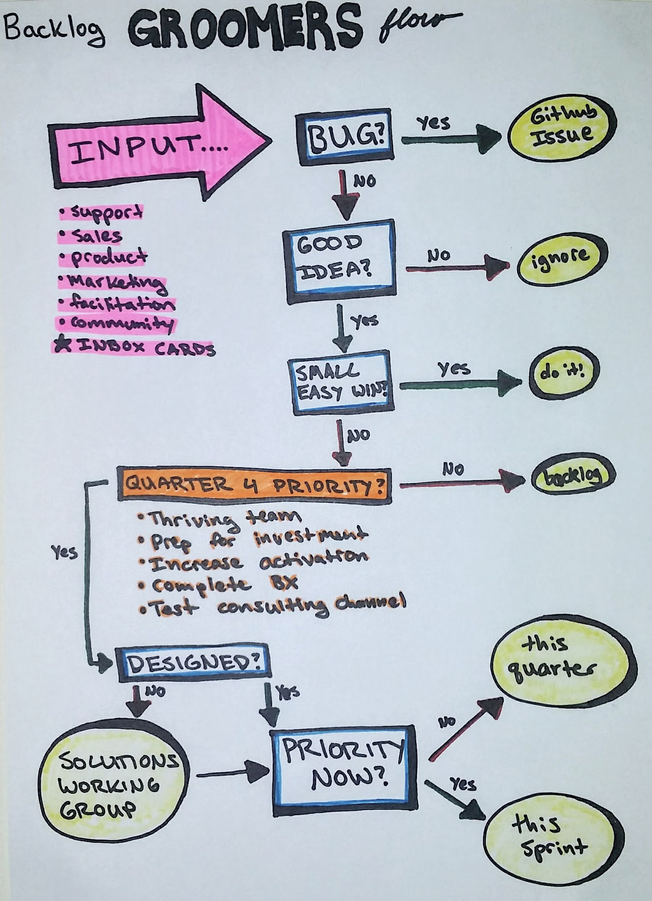

Product Prioritisation
How does Loomio decide what to build in the software?
We use an Agile development process, so we have familiar functions like the product owner and backlog grooming. However, we tend to take a more distributed, collaborative approach to these methods.
Backlog Groomers
The Groomers working group meets every other week, at the midpoint of the sprint, to review the backlog on our sprint board, process incoming feedback, and make decisions about what to ask the developers to spend their time working on.
The Groomers hear from various input sources, and try to maximise quality and diversity of feedback informing product prioritisation. These voices include customer support, our user community group, sales and marketing team, metrics and analytics, Loomio developers, facilitation experts, accessibility advisors, and the views of the team members.
Throughout the sprint, if anyone on the team has an idea or is offered one from a user or anyone, they create a card on the "inbox" list on the sprint board. The Groomers process these cards in their meetings.
The Groomers follow a decision-making flow, to prioritise cards according to our quarterly plan.

Solutions Working Group
The solutions working group is where problems go to become solutions. Often it's temping to identify an issue and jump straight to the first solution, but often it turns out that the problem is actually only one part of a larger issue, or is better solved with lateral thinking. Putting ideas through to be developed before they've been properly designed is a recipe for a bad user experience and frustrated coders.
The team challenges itself to explain the evidence or experience of the problem clearly, without making too many assumptions before the design process can take place. After solutions have been designed, we consider them for development priority. While delivering a great new design is exciting, we try not to jump straight into building them without thinking about what other important things we might want to work on, too.
Product Facilitator
The Loomio product facilitator is a role that occasionally rotates among team members. We generally select someone who has a particular skill or passion for how we have prioritised the product development focus.
The product facilitator keeps the product team humming by ensuring that the key product processes are happening:
- grooming
- sprint planning
- QA
- regular product team meetings
The product facilitator keeps product development aligned to our agreed business priorities, by
- being the main point of contact between the groomers and the product team
- making sure the product backlog is full of justified, designed and scoped stories that align with our quarterly & annual plans
- where needed, 'making the call' about product decisions that are holding up the team
Writing Good Stories
Anyone from the team can add a story to the Inbox (the first list on the Loomio Sprint Board).
A story is either a description of a problem, or a statement of value. At the very least a story should have a name, and 3 lines: “As a... I want to... So that I can...”.
Some other things you can include to make it a stronger contender for prioritisation:
- Evidence: “7 customers have asked about X this year”
- Effort to deliver: “This is a huge job”
- Value: “If we had this feature we’d make X sales”
- Risk: “If we don’t do it, we will be in big trouble”
- Opportunity cost: “Working on this means we won’t be working on this”